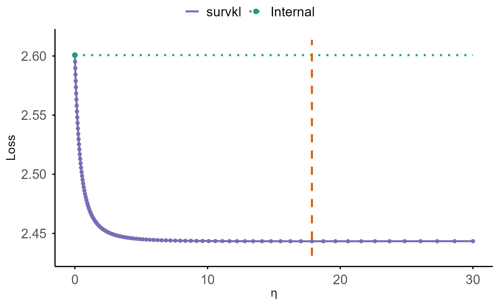

Plot Cross-Validation Results vs Eta
cv.plot.RdPlots cross-validated performance across eta for
cv.coxkl, cv.coxkl_ridge, or cv.coxkl_enet results.
The main CV curve is drawn as a solid purple line; a green dotted horizontal
reference line is placed at the value corresponding to eta = 0
(or the closest available eta), with a solid green point marking that
reference level.
Details
The function reads the performance metric from the object:
For
"cv.coxkl": usesobject$internal_stat(one row pereta).For
"cv.coxkl_ridge"and"cv.coxkl_enet": usesobject$integrated_stat.best_per_eta(bestlambdapereta).
The y-axis label is set to “Loss” if criteria in the object is
“V&VH” or “LinPred”; otherwise it is “C Index”.
The horizontal reference (“baseline”) is taken from the plotted series at
eta = 0 (or the nearest eta present in the results).
Examples
data(Exampledata_lowdim)
#> Warning: data set 'Exampledata_lowdim' not found
train_dat_lowdim <- ExampleData_lowdim$train
beta_external_good_lowdim <- ExampleData_lowdim$beta_external_good
etas <- generate_eta(method = "exponential", n = 100, max_eta = 30)
cv_res <- cv.coxkl(z = train_dat_lowdim$z,
delta = train_dat_lowdim$status,
time = train_dat_lowdim$time,
stratrum = train_dat_lowdim$stratum,
beta = beta_external_good_lowdim,
etas = etas,
nfolds = 5,
criteria = c("V&VH"),
seed = 1)
#> Warning: Stratum not provided. Treating all data as one stratum.
cv.plot(cv_res)
